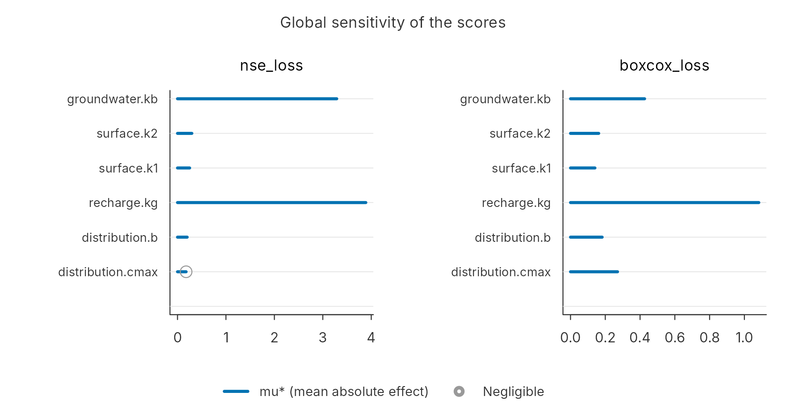
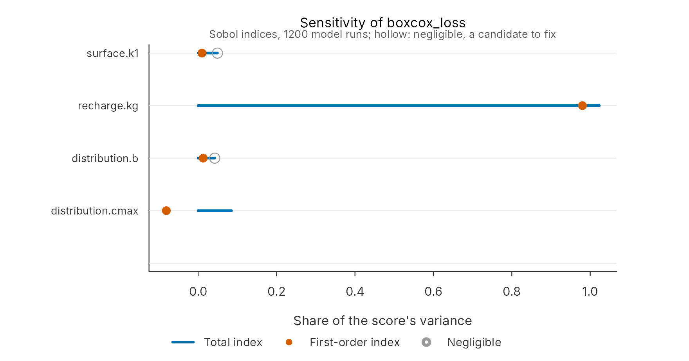

Which parameters can the record determine? Global sensitivity
pdmS7 documentation
Source:vignettes/global-sensitivity.Rmd
global-sensitivity.RmdCalibrate the same catchment twice and get two different sets of parameters with the same score: the commonest complaint about automatic calibration. Usually the search is not at fault. The record simply does not contain the information to fix some of the parameters: many values fit equally well, and each search stops at a different one. A sensitivity analysis finds those parameters before the calibration wastes effort on them.
Why one at a time is not enough
The usual check moves one parameter at a time from the calibrated set and watches the score. That measures sensitivity at one point. A parameter can look unimportant there only because of where the others happen to sit: a slow groundwater store matters little if the recharge feeding it is small. A global analysis moves every parameter across its whole range, all together, and asks how much each one matters on average and whether its effect depends on the others.
A catchment and its bounds
The synthetic catchment of Counting every
error fairly, with the bounds calibration_bounds()
gives the standard structure (it holds the rainfall factor
fc fixed unless asked otherwise):
rain <- synthetic_rain("2017-10-01", years = 3, dt = 1, seed = 5)
truth <- modifyList(pdm_presets("standard"), list(area_km2 = 25))
model <- pdm_from_config(truth)
forcing <- rain[c("time", "rain", "pet")]
set.seed(8)
flow <- run_pdm(model, forcing[c("rain", "pet")], initial_state(model, 0.5))$output$q_m3s
observed <- flow * exp(rnorm(length(flow), 0, 0.15))
b <- calibration_bounds(truth)
b[, c("path", "lower", "upper", "scale")]
#> path lower upper scale
#> 1 distribution.cmax 2e+01 800 linear
#> 2 distribution.b 5e-02 2 linear
#> 3 recharge.kg 1e+00 5000 log
#> 4 surface.k1 5e-01 72 log
#> 5 surface.k2 5e-01 72 log
#> 6 groundwater.kb 1e+02 1000000 log
lower <- stats::setNames(b$lower, b$path)
upper <- stats::setNames(b$upper, b$path)Morris screening
Morris’s method walks random paths through the parameter space, changing one parameter at a time by a fixed step, and records how much the score moves each time: an elementary effect. Two numbers summarise each parameter’s effects:
-
mu_star, their mean size: how much the parameter matters; -
sigma, their spread: how much that depends on the others, through interactions or a curved response.
It costs r paths of (parameters + 1) runs each, a few
hundred runs here.
m <- pdm_sensitivity(truth, forcing, observed, lower, upper,
objectives = c("nse_loss", "boxcox_loss"), r = 15,
log_scale = b$path[b$scale == "log"], warmup = 24 * 90, start = "soil")
m
#> Global sensitivity (morris), 105 model runs
#> objective parameter mu_star mu sigma negligible
#> nse_loss distribution.cmax 0.178 0.1132 0.224 TRUE
#> nse_loss distribution.b 0.200 -0.1381 0.235 FALSE
#> nse_loss recharge.kg 3.888 -3.8326 5.154 FALSE
#> nse_loss surface.k1 0.251 -0.0124 0.553 FALSE
#> nse_loss surface.k2 0.296 -0.0730 0.600 FALSE
#> nse_loss groundwater.kb 3.288 -3.2121 5.554 FALSE
#> boxcox_loss distribution.cmax 0.271 0.0657 0.369 FALSE
#> boxcox_loss distribution.b 0.182 -0.1257 0.220 FALSE
#> boxcox_loss recharge.kg 1.083 -0.9893 0.960 FALSE
#> boxcox_loss surface.k1 0.140 0.0661 0.217 FALSE
#> boxcox_loss surface.k2 0.162 0.0468 0.292 FALSE
#> boxcox_loss groundwater.kb 0.426 -0.3755 0.699 FALSE
#> Negligible for some objective: distribution.cmax
plot(m)
The effects are measured per unit of each parameter’s range, so they
compare directly. Read them in two steps. First, which parameters stand
out by mu_star. Second, which sit near zero:
negligible marks those under 5% of the largest. A large
sigma beside a large mu_star means the
parameter’s effect depends on the others.
Here two parameters dwarf the rest: the recharge time constant
recharge.kg and the groundwater store
groundwater.kb. Their ranges are enormous (1 to 5,000
hours, and 100 to a million), and at the far ends of them the model
drains far too fast or not at all, which wrecks any score. So they
matter most, in the sense that a wrong value is ruinous; and by NSE they
make the soil store cmax, a perfectly important parameter,
look negligible beside them. The Box-Cox objective, which counts the low
flows those stores govern, spreads its sensitivity more evenly.
That is the first lesson of a global analysis: sensitivity is relative to the ranges given. A parameter allowed a huge range dominates, and hides the others. Before fixing anything marked negligible, narrow the ranges to what is physically plausible for the catchment and run it again.
Sobol indices
Morris ranks the parameters; Sobol’s method apportions the score’s variance between them. Each parameter has two indices:
-
first: the share of the variance it explains alone; -
total: the share it explains with all its interactions.
A parameter whose total index is near zero can be fixed anywhere in
its range without changing the score. It costs n x
(parameters + 2) runs, so a few thousand for a usable answer; here a
smaller one on four parameters.
four <- c("distribution.cmax", "distribution.b", "recharge.kg", "surface.k1")
s <- pdm_sensitivity(truth, forcing, observed, lower[four], upper[four],
objectives = "boxcox_loss", method = "sobol", n = 200,
log_scale = intersect(four, b$path[b$scale == "log"]),
warmup = 24 * 90, start = "soil")
s
#> Global sensitivity (sobol), 1200 model runs
#> objective parameter first total negligible
#> boxcox_loss distribution.cmax -0.0812 0.0852 FALSE
#> boxcox_loss distribution.b 0.0129 0.0423 TRUE
#> boxcox_loss recharge.kg 0.9802 1.0233 FALSE
#> boxcox_loss surface.k1 0.0098 0.0492 TRUE
#> Negligible for some objective: distribution.b, surface.k1
plot(s)
Over these ranges the recharge time constant explains nearly all the
variance of the score alone (a first-order index near 1), and
b and the surface store fall below the 5% line: the same
lesson again, that one parameter with a vast range crowds out the rest.
When the first-order and total indices are close, a parameter acts
alone; a total well above its first-order index means interactions. The
indices of a small sample are rough, and can dip below zero, as
cmax’s first-order index does here; a few thousand runs
steady them.
From sensitivity to a better calibration
- Run Morris on the structure’s full bounds, with the objective you will calibrate on.
- Fix the negligible parameters at a sensible value: the structure’s default, a regional value, or the descriptor model’s prediction.
- Calibrate the rest. Fewer free parameters means fewer equally good answers, so repeated calibrations, and calibrations of neighbouring catchments, agree.
keep <- unique(m$parameter[!m$negligible])
fit <- calibrate_pdm(truth, forcing, observed, lower[keep], upper[keep], objective = "boxcox")Cautions
- Sensitivity depends on the bounds. A parameter given a narrow range looks unimportant. Use the full plausible range.
- It depends on the record. A dry record says little about the parameters of floods. Check that the record holds the conditions the model will forecast.
- Negligible is not the same as unimportant to the forecast. A parameter the record cannot fix may still matter in a flood larger than any in the record. Fix it at a value that is sensible for those floods.